Overview
A modular, low-cost precision linear stage built from salvaged 3D-printer parts, with mounting holes for optical breadboard integration. The stage itself is half the project; the other half is the embedded and software system I built to actually characterize how straight it moves, rather than trusting the bearing manufacturer's spec sheet.

Mechanical Design
An 8 mm lead screw driven by a NEMA 17 stepper gives 20 µm of linear travel per step. The carriage rides an MGN9C linear rail (±17 µm straightness spec over 300 mm), coupled to the lead screw nut through a 3D-printed PETG flexure coupler that's compliant in 4 degrees of freedom, absorbing misalignment, shaft whip, and thermal expansion while still constraining translation and rotation where it matters. An anti-backlash nut with preload springs keeps hysteresis down.
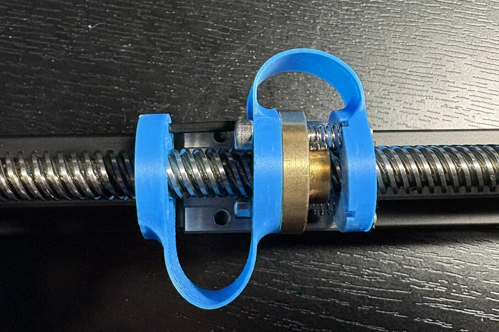
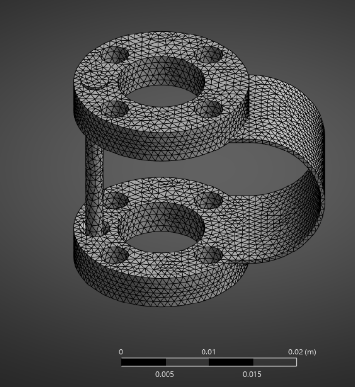
To confirm the coupler actually flexes the way it's meant to, I ran a modal analysis, finding each of its four primary compliant degrees of freedom, two rotations and two translations:
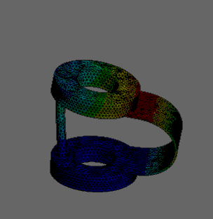
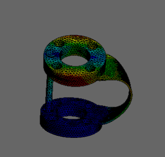
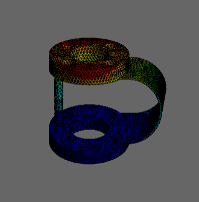
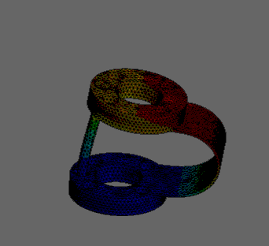
Embedded
An Arduino Nano and A4988 stepper driver on a breadboard handle low-level motion control, exposed through a simple serial command set (H = home, M{pos} = move, S = stop). Limit switch feedback and software position/velocity/acceleration limits and a software communication watchdog keep the stage from doing anything destructive if a command is malformed.
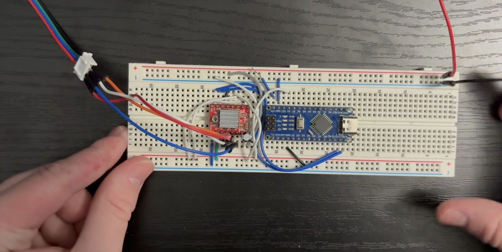
Orchestration Software
Rather than take the bearing spec on faith, I built a full measurement system around the stage: a Python GUI to drive it, and a separate embedded vision pipeline to read a physical dial indicator automatically at each position.
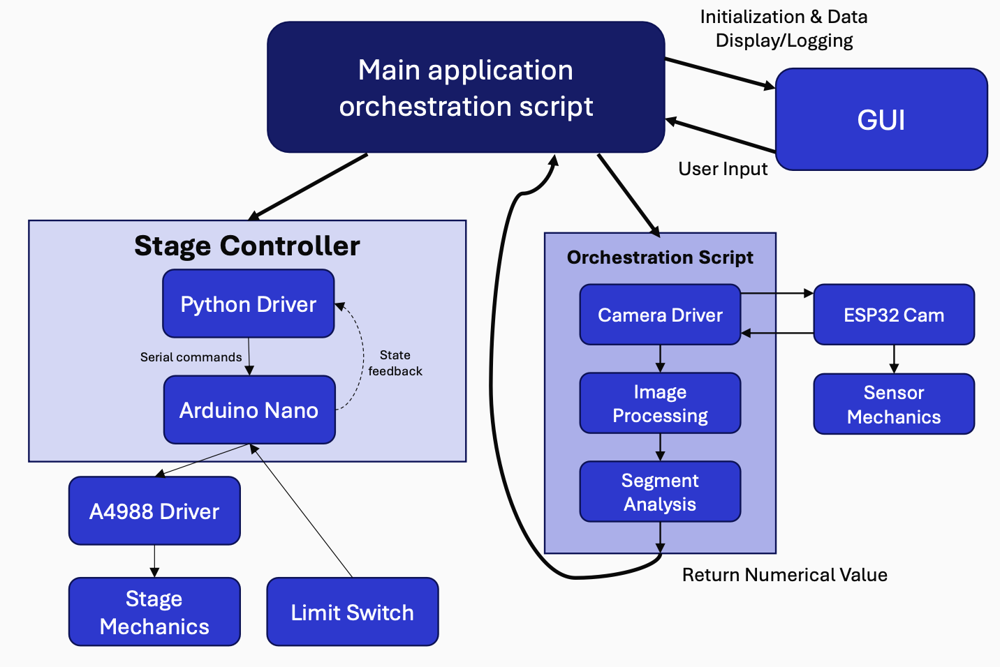
Control GUI
A Python GUI, the "Automated Metrology Dashboard," ties the stage and the vision system together in one place: connect to the camera and stage over serial, jog the stage manually, load and run a CSV sequence for an unattended measurement sweep, and view the live camera feed and decoded reading as it logs data points.
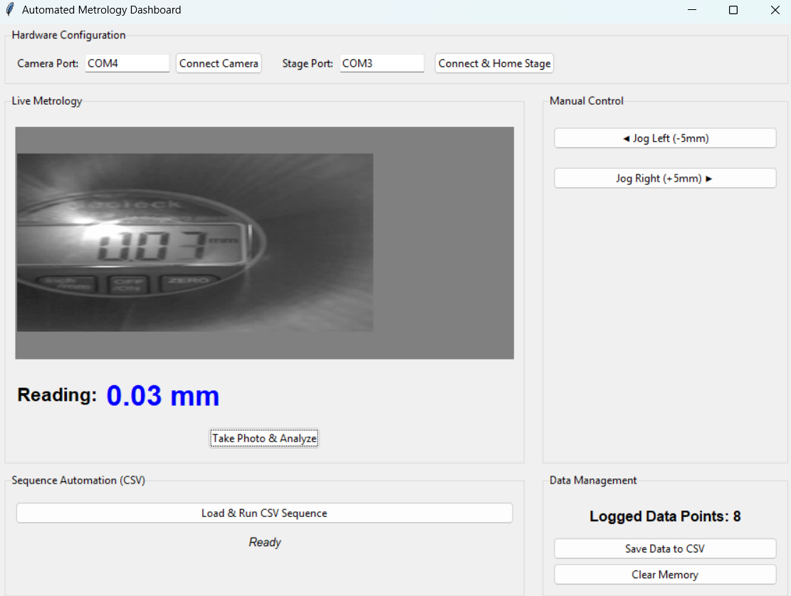
Vision System
An ESP32-CAM, synced to the Arduino over serial, photographs a digital dial indicator at each stage position. A custom 3D-printed housing holds it at a fixed 75 mm working distance with diffuse LED illumination to keep readings consistent from shot to shot.
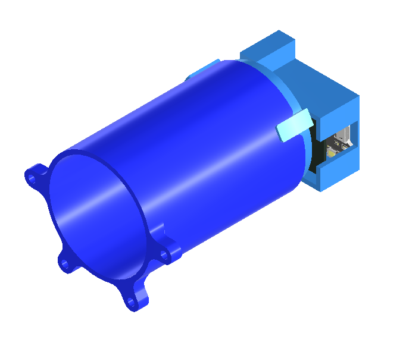
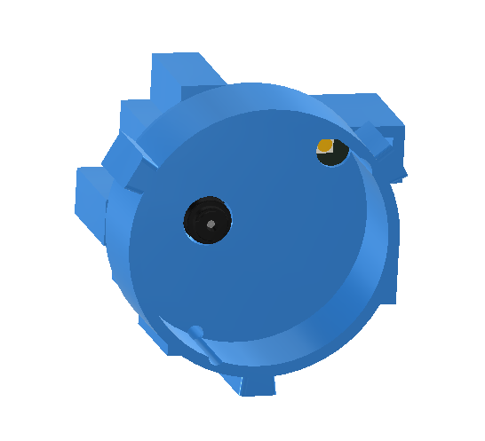
On the processing side, OpenCV decodes the indicator's 7-segment display directly from the captured image: it checks each segment's expected location, maps the on/off pattern to a digit, and returns a numerical reading with no manual transcription.
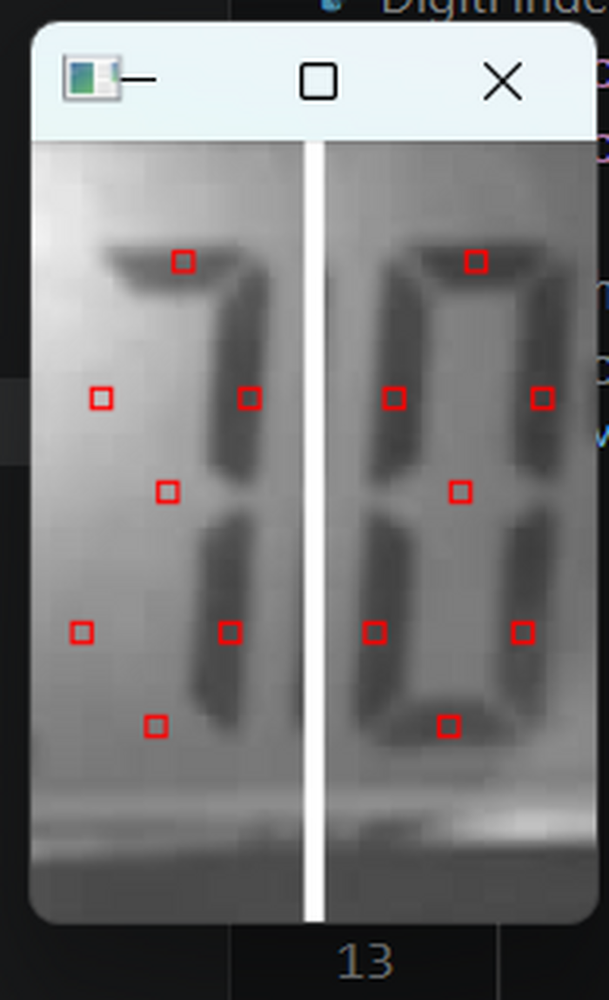
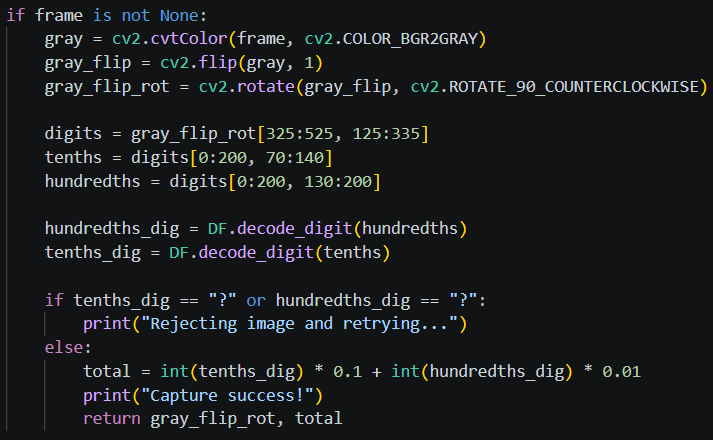
The system achieved a >99% operational measurement success rate through simple retry-on-failure error handling, and it's what actually generated the straightness dataset behind the results below.
Results
Raw straightness data came back at ±45 µm, over 2.5x the manufacturer's ±17 µm spec. Instead of concluding the bearing was out of spec, I decomposed the error into three layers: installation alignment (linear slant), macroscopic bending of the rail itself, and the true local surface profile once both of those were removed.
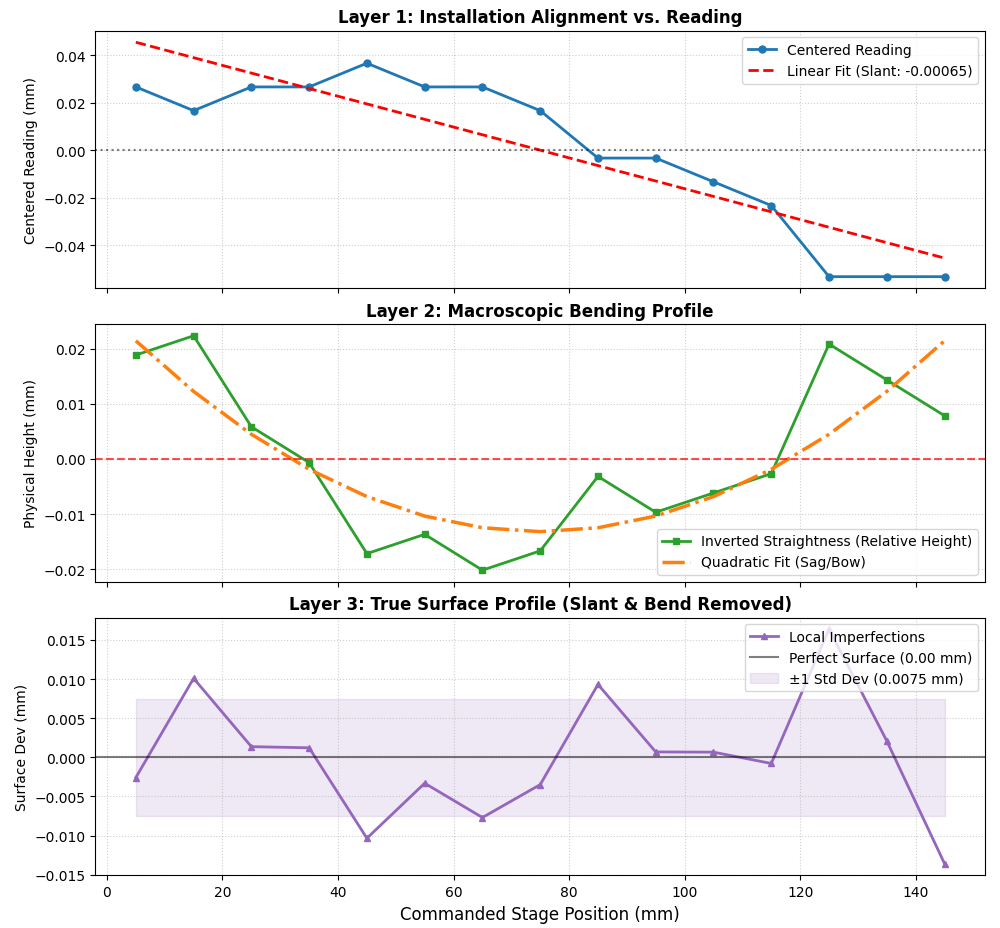
Once alignment tilt and rail bending were regressed out, the true local straightness came back to ±15 µm, inside the manufacturer's ±17 µm spec. The apparent "failure" was measurement setup, not the bearing.